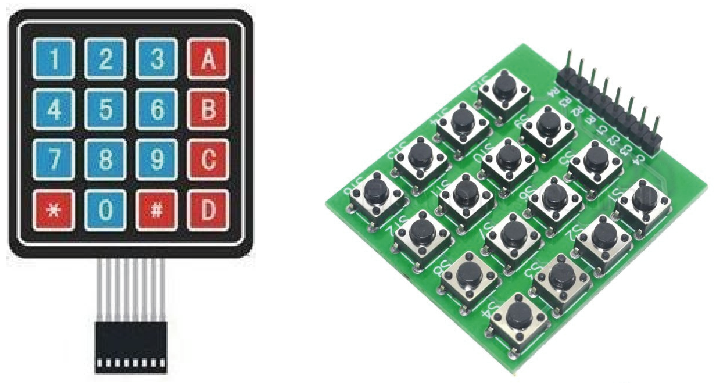
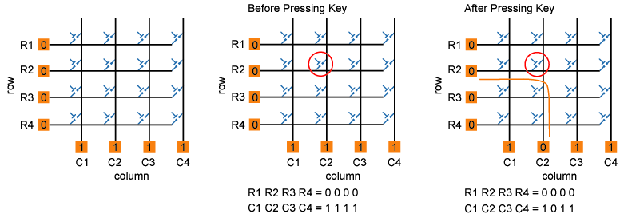
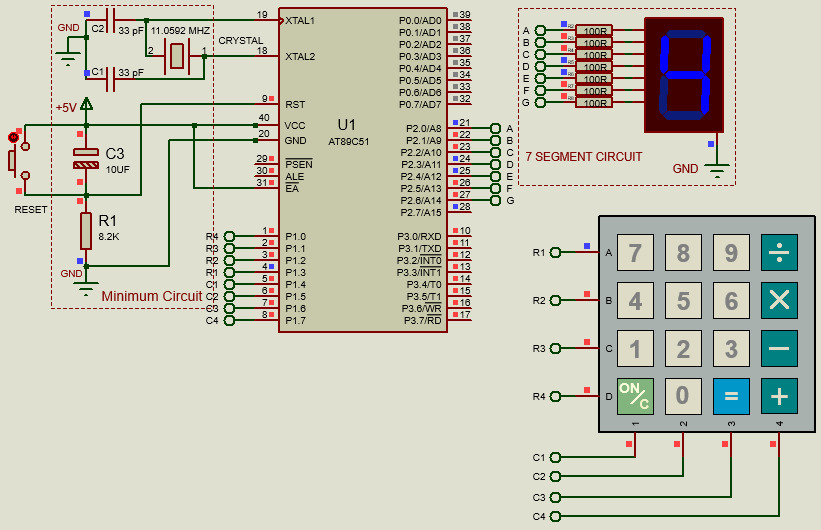

Introduction:
When we want to interface one key to the microcontroller then it needs one GPIO pin.
But when we want to interface many keys like 9, 12 or 16 etc., then it may acquire
all GPIO pins of your microcontroller. To save some GPIO pins of microcontroller,
we can use MATRIX KEYPAD.
E.g. if we want to interface 16 keys to the microcontroller then we require 16
GPIO pins but if we use matrix 4x4 keypad then we require only 8 GPIO pins of
microcontroller.
This article is about interfacing a 4x4 key pad to 8051 microcontroller.
A clear knowledge on interfacing key pads to 8051 is very essential while
designing embedded system projects which requires character or numeric input
or both. For example projects like digital code lock, numeric calculator etc.
Hardware Discussion : Matrix Keypad

Fig: 4x4 Keypad Matrix (Hex Keypad)
Keypad Matrix Features :
- Reduced I/O required.
- Available in tactile switches and membranes.
- Less debounce chances.
- Long life
- Robust application's
- Supports wide environmental conditions.
Keypad Matrix Basics

Fig: Hex Keypad internal wiring and Effect of a Switch Press
Hex key pad is essentially a collection of 16 keys arranged in the form of a 4×4 matrix.
Hex key pad usually have keys representing numeric 0 to 9 and characters A to F.
The simplified diagram of a typical hex key pad is shown in above figure.
How Works ?
The hex keypad has 8 communication lines namely R1, R2, R3, R4, C1, C2, C3 and C4.
R1 to R4 represents the four rows and C1 to C4 represents the four columns. When a
particular key is pressed the corresponding row and column to which the terminals
of the key are connected gets shorted. For example if key 1 is pressed row R1 and
column C1 gets shorted and so on. The program identifies which key is pressed by
a method known as column scanning. In this method a particular row is kept low
(other rows are kept high) and the columns are checked for low. If a particular
column is found low then that means that the key connected between that column
and the corresponding row (the row that is kept low) is been pressed. For example
if row R1 is initially kept low and column C1 is found low during scanning,
that means key 1 is pressed.
Key Scanning:
To detect a pressed key, the microcontroller grounds all rows by providing 0
to the output latch, and then it reads the columns shown in above fig.
If the data read from columns is = 1111, no key has been pressed shown in
above fig. and the process continues till key press is detected.
Now, consider highlighted key in above fig. is pressed. After pressing key,
it makes contact of row with column shown below.
If one of the column bits has a zero, this means that a key press has occurred.
For example, if C1:C4 = 1011, this means that a key in the C2 column has been pressed.
After detecting a key press, microcontroller will go through the process of identifying the key.
Process of Identifying the Key
Starting from the top row, the microcontroller will ground it by providing a low to row R1 only.
Now read the columns, if the data read is all 1s, no key in that row is pressed and the
process continues for the next row.
So, now ground the next row, R2. Read the columns, check for any zero and this process continues
until the row is identified.
E.g. In above case we will get row 2 in which column is not equal to 1111.
So, after identification of the row in which the key has been pressed we can easily find out
the key by row and column value.
Circuit Diagram :

Fig: 4x4 Keypad Interfacing with 8051
Circuit Discussion :
The circuit diagram for demonstrating interfacing hex keypad to 8051 is shown below.
Like previous 8051 projects, AT89S51 is the microcontroller used here. The circuit
will display the character/numeric pressed on a seven segment LED display.
The circuit is very simple and it uses only two ports of the microcontroller, one for
the hex keypad and the other for the seven segment LED display.
The hex keypad is interfaced to port 1 and seven segment LED display is
interfaced to port 0 of the microcontroller. Resistors R1 to R8 limits the current
through the corresponding segments of the LED display. Capacitors C1, C2 and crystal
X1 completes the clock circuitry for the microcontroller. Capacitor C3, resistor R9
and push button switch S1 forms a debouncing reset mechanism.
Code Discussion:
|